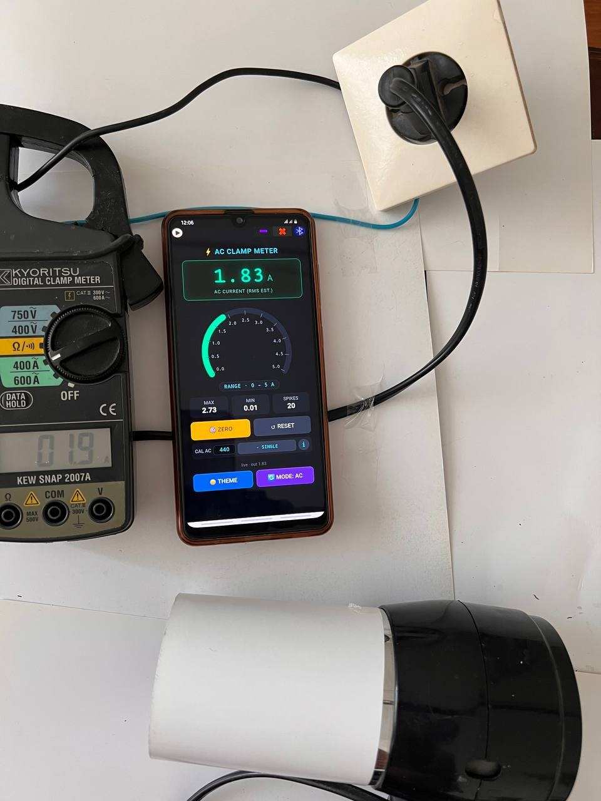
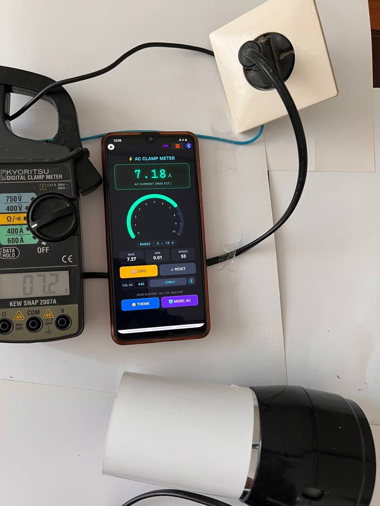
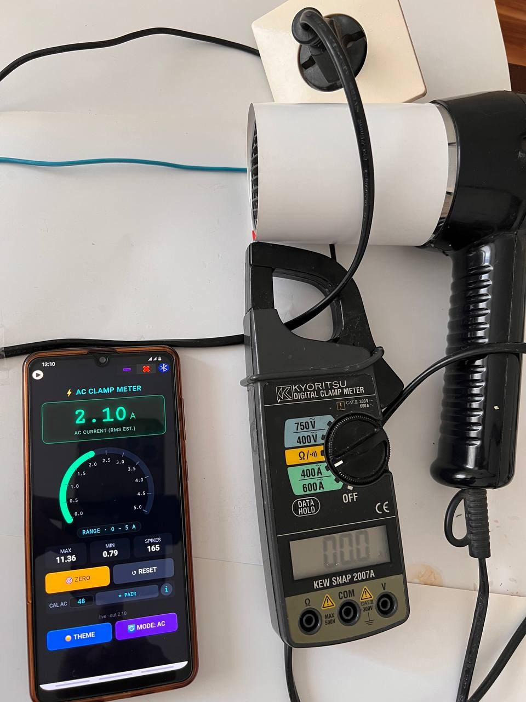
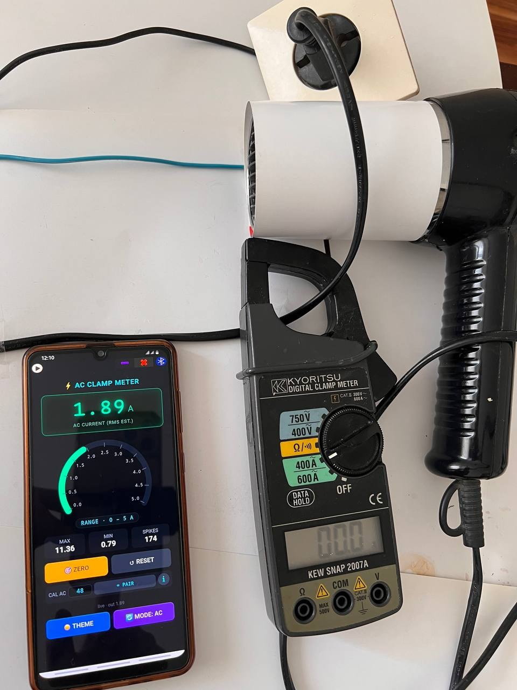
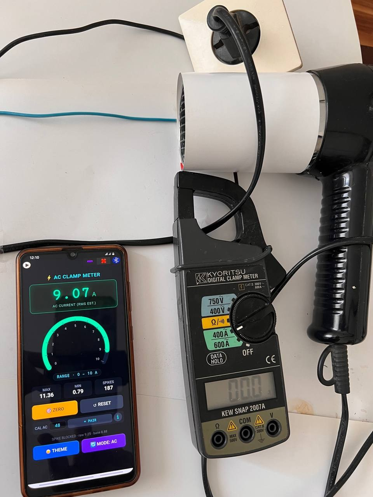

⚡ AC/DC Clamp Meter — Free Current Meter on Your Phone
Free Ammeter in Your Pocket — a free AC clamp meter, DC clamp meter and current meter for your phone. Measure AC and DC current on a single wire or a two-core cable — no extra hardware, no external clamp, no soldering. Just your phone's built-in magnetic sensor and SoifGo.
A clamp meter measures current without touching the metal of the wire,
because it senses the magnetic field around the conductor. Your phone already has a
magnetic sensor (magnetometer) that can do the same job. SoifGo reads that
sensor and turns the field into a current reading in amperes —
a simple, free clamp meter and current meter with no extra parts.
Free: no clamp, no probe, no purchase.
AC and DC: one button switches between AC current measurement and DC current measurement.
Single or pair: separate modes for one wire and for a two-core cable.
Adjustable: four saved calibration factors to match your own phone.
Open example: copy-ready code you can modify and improve.
How to open the AC/DC clamp meter in SoifGo
You do not need to write any code. SoifGo already includes this app as a ready-made sample:
Download SoifGo and open it.
Tap the Menu and go to Edit.
In Edit, choose Design and create a folder.
Inside the folder, create a page.
Add a button to the page. In the button's menu, choose Behavior.
Select the behavior WebView HTML, then the type Offline HTML file.
Choose the Sample option, then select clamp_meter.html.
Go to the Play page and tap the button — the AC/DC clamp meter opens.
Edit the code or paste your own version
With the HTML page open, tap the Menu and choose Edit — the HTML code edit page opens.
Change the code there, or paste code made by an AI assistant: copy it, then use the Select All and Paste option in the HTML code edit menu.
Tap the yellow ✕ Close, go back and see the result.
Choose the wire type:- SINGLE for one conductor, = PAIR for a two-core cable.
Press ZERO away from any cable so the surrounding field is removed.
Place the phone on the insulated cable and keep the same distance for every measurement.
Read the amps, then adjust the CAL value against a known load.
⚠ Safety & accuracy: never use the phone on bare copper busbars or any uninsulated live parts. The phone only needs to rest on the insulated cable. The result is a calibrated estimate, not a certified instrument — use a proper meter for safety-critical work.
Single wire vs. two-core cable (pair) measurement
The magnetic field around a cable depends on how the current flows. That is why the app has a
wire button with two modes, each with its own calibration factor:
- SINGLE (one wire): put the phone on one insulated conductor — for example only the live wire of a split cable. The field is strong, so the calibration factor is large.
= PAIR (two-core cable): put the phone on a normal two-core cable (live + neutral). The two currents flow in opposite directions, so their magnetic fields largely cancel.
Why the PAIR factor is ~10× smaller: because the fields cancel, only a small part of the field is left to measure. The calibration factor is therefore up to 10 times smaller than in single-wire mode, and the reading is more sensitive to distance and placement. Always calibrate PAIR separately.
Keep the distance between the phone and the conductor the same for every measurement — otherwise the calculated value will not be correct.
AC vs. DC current measurement
AC mode (RMS estimate): the app looks at how much the alternating field swings (peak-to-peak) and converts it to amps. It works best with a steady load such as a heater, kettle or motor.
DC mode (signed): the app averages the field, subtracts the ZERO value and converts it to amps. The reading is signed, so the sign shows the current direction.
When you switch to DC the app runs ZERO automatically. A phone magnetometer also sees the Earth's field and nearby metal, so in DC mode keep the phone still and in the same orientation, and press ZERO again if the reading drifts.
The gauge picks its own range — 0–5 A, 0–10 A or 0–20 A — and also shows MAX, MIN and a SPIKES counter.
How it works — the whole story is simple
AC mode
Step 1 — Decimal → Integer. Using a factor of 10, the decimal sensor values become integers, which gives a much better numeric sample.
Step 2 — Take 25 samples. The app keeps the latest 25 samples of the alternating field.
Step 3 — Peak-to-peak. It subtracts the ZERO value, then subtracts the lowest point from the highest point.
Step 4 — Divide by calibration. That peak-to-peak value is divided by the calibration number. The result is the current in Amperes.
Step 5 — Clean the reading. A spike filter, a weighted vote of the last 7 results, smoothing and hysteresis keep the display stable.
DC mode
Step 1 — Average. The app averages the last 5 samples.
Step 2 — Subtract ZERO. The stored ZERO value is removed.
Step 3 — Divide by calibration. The result is signed current in Amperes, then smoothed.
What is calibration? Why 480, 48, 220 and 22?
The default numbers are experimental values found by the author of this app,
measured on his own phone at 1 Ampere. On your phone, at 1 Ampere,
you will probably get a different number. The app saves four factors:
Mode
Single wire
Pair (two-core)
AC
480
48
DC
220
22
Adjust them until your ammeter reads correctly. Use a known load
(for example a 1 kW heater ≈ 4.35 A at 230 V), compare the reading with a
reference ammeter, and change the CAL value in the app
until it matches.
💡 Build your own version
The code below is a sample for you. You can build a better one —
the idea is what matters. Take your own design idea and give it to an AI
assistant; it will help you build it. If the assistant gets stuck, give it
this address:
https://soifgo.github.io/soifgo/SOIFGO_AI_CONTEXT.md
— and if it still can't reach it, paste the content of that file to it.
You can also give it the example code below.
The example code — free AC/DC current meter source
clamp_meter.html
<!DOCTYPE html>
<html>
<head>
<meta charset="UTF-8">
<meta name="viewport" content="width=device-width, initial-scale=1">
<title>AC/DC Clamp Meter</title>
<style>
* { box-sizing: border-box; -webkit-tap-highlight-color: transparent; }
body {
font-family: 'Segoe UI', sans-serif; margin: 0; padding: 14px;
padding-top: calc(14px + 5vh); /* shifted down 5% from the top */
background: #0a0e14; color: #e6edf3;
min-height: 100vh; display: flex; flex-direction: column;
align-items: center; justify-content: flex-start;
transition: background 0.3s, color 0.3s;
}
/* ---- Light Theme Styles (For Video Recording / Reflection Fix) ---- */
body.light-theme {
background: #ffffff !important;
color: #111111 !important;
}
body.light-theme h2 {
color: #007791 !important;
}
body.light-theme .digital {
background: #f0f4f8 !important;
border-color: #0d5c4a !important;
box-shadow: 0 0 24px rgba(0,0,0,0.08) inset !important;
}
body.light-theme .digital .val {
color: #00875a !important;
text-shadow: 0 0 10px rgba(0,135,90,0.2) !important;
}
body.light-theme .digital .unit {
color: #0a8f6f !important;
}
body.light-theme .digital .sub {
color: #555555 !important;
}
body.light-theme #rangeBadge {
background: #e1e8ed !important;
color: #007791 !important;
border-color: #cbd5e1 !important;
}
body.light-theme .info .card {
background: #f0f4f8 !important;
color: #555555 !important;
}
body.light-theme .info .card b {
color: #111111 !important;
}
body.light-theme .cal {
background: #f0f4f8 !important;
}
body.light-theme .cal label {
color: #555555 !important;
}
body.light-theme .cal input {
background: #ffffff !important;
border-color: #cbd5e1 !important;
color: #007791 !important;
}
body.light-theme #status {
color: #666666 !important;
}
body.light-theme #arcTrack {
stroke: #d0d7de !important;
}
body.light-theme #arcFill {
stroke: #00a86b !important;
}
body.light-theme #ticks {
stroke: #94a3b8 !important;
}
body.light-theme #tickLabels {
fill: #555555 !important;
}
body.light-theme .btn-reset {
background: #cbd5e1 !important;
color: #111111 !important;
}
h2 { margin: 4px 0 12px; font-size: 18px; font-weight: 600;
color: #4dd0e1; letter-spacing: 1px; }
.digital {
background: #041410; border: 2px solid #0d5c4a; border-radius: 14px;
padding: 14px 28px; margin-bottom: 16px; width: 100%; max-width: 340px;
text-align: center; box-shadow: 0 0 24px rgba(0,255,180,.15) inset;
}
.digital .val {
font-family: 'Courier New', monospace;
font-size: 56px; font-weight: 700; color: #00ffb3;
text-shadow: 0 0 18px rgba(0,255,179,.7); line-height: 1;
}
.digital .unit { font-size: 22px; color: #0a8f6f; margin-left: 6px; }
.digital .sub { font-size: 12px; color: #3d8f7a; margin-top: 6px; letter-spacing: 1px; }
.gauge-wrap { position: relative; width: 300px; height: 214px; margin-bottom: 6px; }
.gauge-wrap svg { width: 100%; height: 100%; display: block; }
#rangeBadge {
font-family: monospace; font-size: 13px; color: #4dd0e1;
letter-spacing: 1px; margin-bottom: 14px;
background: #101820; padding: 4px 14px; border-radius: 20px;
border: 1px solid #1d2c38;
}
.info {
display: flex; gap: 10px; width: 100%; max-width: 340px;
margin-bottom: 12px;
}
.info .card {
flex: 1; background: #131a22; border-radius: 10px;
padding: 8px; text-align: center; font-size: 12px; color: #7d8b99;
}
.info .card b { display: block; font-size: 18px; color: #e6edf3; margin-top: 2px; }
.controls { width: 100%; max-width: 340px; display: flex; flex-direction: column; gap: 10px; }
.row { display: flex; gap: 10px; }
button {
flex: 1; padding: 14px; font-size: 15px; font-weight: 600;
border: 0; border-radius: 10px; cursor: pointer; transition: .15s;
}
.btn-zero { background: #f5a623; color: #1a1a1a; }
.btn-zero:active { background: #c8851a; }
.btn-reset { background: #2b3540; color: #cfd8dc; }
.btn-reset:active { background: #1f272f; }
.btn-theme { background: #3b82f6; color: #ffffff; }
.btn-theme:active { background: #2563eb; }
.btn-mode { background: #8b5cf6; color: #ffffff; }
.btn-mode:active { background: #6d3fd6; }
.cal {
background: #131a22; border-radius: 10px; padding: 6px 8px;
display: flex; align-items: center; gap: 6px;
}
.cal label { font-size: 12px; color: #7d8b99; white-space: nowrap; }
.cal input {
flex: 0 0 62px; width: 62px; background: #0a0e14; border: 1px solid #2b3540; color: #4dd0e1;
border-radius: 8px; padding: 4px 2px; font-size: 14px; text-align: center;
font-family: monospace; min-width: 0;
}
.btn-info {
flex: 0 0 32px; width: 32px; height: 32px; padding: 0; border-radius: 50%;
background: #2b3540; color: #4dd0e1; font-size: 17px; font-weight: 700;
font-family: Georgia, serif; line-height: 1;
}
.btn-info:active { background: #1f272f; }
.btn-wire {
flex: 1; width: auto; padding: 0 9px; height: 32px; border-radius: 8px;
background: #2b3540; color: #4dd0e1; font-size: 11px; font-weight: 700;
letter-spacing: .5px; font-family: monospace;
}
.btn-wire:active { background: #1f272f; }
body.light-theme .btn-wire { background: #cbd5e1 !important; color: #007791 !important; }
/* ---- Info overlay ---- */
#infoOverlay {
display: none; position: fixed; inset: 0; z-index: 50;
background: rgba(0,0,0,.7); align-items: center; justify-content: center;
padding: 18px;
}
#infoOverlay.show { display: flex; }
.info-box {
background: #131a22; color: #e6edf3; border: 1px solid #2b3540;
border-radius: 14px; padding: 18px; width: 100%; max-width: 340px;
max-height: 90vh; overflow-y: auto;
}
.info-box h3 { margin: 0 0 10px; font-size: 16px; color: #4dd0e1; }
.info-box ul { margin: 0 0 14px; padding-left: 18px; font-size: 13px; line-height: 1.55; }
.info-box li { margin-bottom: 8px; }
.info-box li.warn { color: #ff6b6b; font-weight: 600; }
.btn-close { background: #ef4444; color: #ffffff; width: 100%; flex: none; }
.btn-close:active { background: #c93535; }
body.light-theme .info-box { background: #ffffff !important; color: #111111 !important; border-color: #cbd5e1 !important; }
body.light-theme .info-box h3 { color: #007791 !important; }
body.light-theme .info-box li.warn { color: #d32f2f !important; }
body.light-theme .btn-info { background: #cbd5e1 !important; color: #007791 !important; }
#status { font-size: 11px; color: #4a5560; margin-top: 8px; text-align: center; }
</style>
</head>
<body>
<h2 id="title">⚡ AC CLAMP METER</h2>
<div class="digital">
<div><span class="val" id="amps">0.00</span><span class="unit">A</span></div>
<div class="sub" id="subLabel">AC CURRENT (RMS EST.)</div>
</div>
<div class="gauge-wrap">
<svg viewBox="0 14 300 214">
<path id="arcTrack" fill="none" stroke="#1a232e" stroke-width="16"
stroke-linecap="round"/>
<path id="arcFill" fill="none" stroke="#00ffb3" stroke-width="16"
stroke-linecap="round"/>
<g id="ticks" stroke="#3d4b5a" stroke-width="2"></g>
<g id="tickLabels" fill="#7d8b99" font-size="12" text-anchor="middle"
font-family="monospace"></g>
</svg>
</div>
<div id="rangeBadge">RANGE · 0 – 5 A</div>
<div class="info">
<div class="card">MAX<b id="maxVal">0.00</b></div>
<div class="card">MIN<b id="minVal">0.00</b></div>
<div class="card">SPIKES<b id="spikeCount">0</b></div>
</div>
<div class="controls">
<div class="row">
<button class="btn-zero" onclick="zeroNow()">🎯 ZERO</button>
<button class="btn-reset" onclick="resetAll()">↺ RESET</button>
</div>
<div class="cal">
<label id="calLabel">CAL AC</label>
<input id="calFactor" type="number" value="480" inputmode="decimal">
<button class="btn-wire" id="wireBtn" onclick="switchWire()">- SINGLE</button>
<button class="btn-info" onclick="showInfo(true)" aria-label="Info">i</button>
</div>
<div id="status">waiting…</div>
<div class="row">
<button class="btn-theme" onclick="toggleTheme()">☀️ THEME</button>
<button class="btn-mode" id="modeBtn" onclick="switchMode()">🔄 MODE: AC</button>
</div>
</div>
<div id="infoOverlay" onclick="if(event.target===this)showInfo(false)">
<div class="info-box">
<h3>ℹ️ Info</h3>
<ul>
<li>This app is designed for and compatible with SoifGo.</li>
<li>The calibration factor of each mode is set for 1 A. If your reading differs, adjust it.</li>
<li class="warn">Never use the phone to measure bare copper busbars or any uninsulated live parts.</li>
<li>Single wire and paired wire (two-core cable) each have their own calibration factor. Use the <b>- SINGLE</b> / <b>= PAIR</b> button to select the wire type (<b>-</b> = one wire, <b>=</b> = two wires); all four factors are saved.</li>
<li class="warn">In PAIR mode (two-core cable) the two currents flow in opposite directions, so their magnetic fields largely cancel each other. The field is reduced so much that the calibration factor becomes up to 10× smaller.</li>
<li>Keep the distance between the phone and the conductor the same for every measurement, otherwise the calculated value will not be correct.</li>
</ul>
<button class="btn-close" onclick="showInfo(false)">✕ CLOSE</button>
</div>
</div>
<script>
var BUFFER_SIZE = 25;
var SCALE = 10;
var DEFAULT_CAL = 480;
var VOTE_SIZE = 7;
var VOTE_TOL = 0.30;
var EWMA_ALPHA = 0.45;
var HYST_DELTA = 0.03;
var SPIKE_DEV = 0.35;
var SPIKE_RETURN = 0.20;
var SPIKE_MAX = 10;
var TOL_MIN = 0.20;
var TOL_MAX = 1.20;
var START_ANGLE = -210;
var END_ANGLE = 30;
var TOTAL_ARC = END_ANGLE - START_ANGLE;
var CX = 150, CY = 150;
var R = 120;
var RANGES = [5, 10, 20];
var currentRange = RANGES[0];
var buffer = [];
var voteBuffer = [];
var zeroOffset = 0;
var currentA = 0;
var votedA = 0;
var ewmaA = 0;
var filteredA = 0;
var maxSeen = -Infinity;
var minSeen = Infinity;
var calFactor = DEFAULT_CAL; // AC calibration
var DEFAULT_DC_CAL = 220;
var dcCal = DEFAULT_DC_CAL; // DC calibration (separate)
var wire = 1; // 1 = single wire, 2 = paired wire (two-core cable)
var calStore = { ac1: 480, ac2: 48, dc1: 220, dc2: 22 }; // 4 saved calibration factors
var mode = 'AC';
var DC_AVG = 5;
var dcZero = 0;
var dcEwma = 0;
var dcInit = false;
var pendingZero = false;
var lastPeak = 0;
var baseline = 0;
var spikeMode = false;
var spikeLen = 0;
var spikeCount = 0;
var baselineInit = false;
function angleToXY(deg, radius) {
var a = deg * Math.PI / 180;
return { x: CX + radius * Math.cos(a), y: CY + radius * Math.sin(a) };
}
function arcPath(degFrom, degTo, radius) {
var p1 = angleToXY(degFrom, radius);
var p2 = angleToXY(degTo, radius);
var delta = degTo - degFrom;
var largeArc = Math.abs(delta) > 180 ? 1 : 0;
var sweep = delta > 0 ? 1 : 0;
return 'M ' + p1.x + ' ' + p1.y +
' A ' + radius + ' ' + radius + ' 0 ' + largeArc + ' ' + sweep +
' ' + p2.x + ' ' + p2.y;
}
function clamp(v, lo, hi) { return Math.max(lo, Math.min(hi, v)); }
function buildGauge() {
var full = arcPath(START_ANGLE, END_ANGLE, R);
document.getElementById('arcTrack').setAttribute('d', full);
document.getElementById('arcFill').setAttribute('d', full);
document.getElementById('arcFill')
.setAttribute('stroke-dasharray', '0 9999');
var ticksG = document.getElementById('ticks');
var labG = document.getElementById('tickLabels');
ticksG.innerHTML = '';
labG.innerHTML = '';
var steps = 10;
for (var i = 0; i <= steps; i++) {
var frac = i / steps;
var deg = START_ANGLE + frac * TOTAL_ARC;
var p1 = angleToXY(deg, R);
var p2 = angleToXY(deg, R - 12);
var line = document.createElementNS('http://www.w3.org/2000/svg', 'line');
line.setAttribute('x1', p1.x); line.setAttribute('y1', p1.y);
line.setAttribute('x2', p2.x); line.setAttribute('y2', p2.y);
ticksG.appendChild(line);
var pl = angleToXY(deg, R - 28);
var txt = document.createElementNS('http://www.w3.org/2000/svg', 'text');
txt.setAttribute('x', pl.x);
txt.setAttribute('y', pl.y + 4);
var lbl = currentRange * frac;
txt.textContent = (currentRange >= 10) ? lbl.toFixed(0) : lbl.toFixed(1);
labG.appendChild(txt);
}
document.getElementById('rangeBadge').textContent =
'RANGE · 0 – ' + currentRange + ' A';
}
function setArc(amps) {
var frac = clamp(amps / currentRange, 0, 1);
var arcLen = (2 * Math.PI * R) * (TOTAL_ARC / 360);
document.getElementById('arcFill')
.setAttribute('stroke-dasharray', (frac * arcLen) + ' 9999');
}
function fmt(v) {
var s = Math.abs(v).toFixed(2);
return ((v < 0 && parseFloat(s) > 0) ? '-' : '') + s;
}
function refreshReadout() {
document.getElementById('amps').textContent = fmt(filteredA);
document.getElementById('maxVal').textContent =
isFinite(maxSeen) ? fmt(maxSeen) : '0.00';
document.getElementById('minVal').textContent =
isFinite(minSeen) ? fmt(minSeen) : '0.00';
document.getElementById('spikeCount').textContent = spikeCount;
setArc(Math.abs(filteredA));
}
function pickRange(amps) {
for (var i = 0; i < RANGES.length; i++) {
if (amps <= RANGES[i]) return RANGES[i];
}
return RANGES[RANGES.length - 1];
}
function adaptiveTol(arr) {
if (arr.length < 2) return VOTE_TOL;
var mx = -Infinity, mn = Infinity;
for (var i = 0; i < arr.length; i++) {
if (arr[i] > mx) mx = arr[i];
if (arr[i] < mn) mn = arr[i];
}
var spread = mx - mn;
var t = VOTE_TOL + spread * 0.5;
return clamp(t, TOL_MIN, TOL_MAX);
}
function weightedVote(arr, tol) {
if (arr.length === 0) return 0;
if (arr.length === 1) return arr[0];
var bestVal = arr[0];
var bestScore = -1;
for (var i = 0; i < arr.length; i++) {
var score = 0;
for (var j = 0; j < arr.length; j++) {
var d = Math.abs(arr[i] - arr[j]);
if (d <= tol) score += 1 / (1 + d);
}
if (score > bestScore) {
bestScore = score;
bestVal = arr[i];
}
}
var sumW = 0, sumWV = 0;
for (var k = 0; k < arr.length; k++) {
var dk = Math.abs(arr[k] - bestVal);
if (dk <= tol) {
var w = 1 / (1 + dk);
sumW += w;
sumWV += w * arr[k];
}
}
return sumW > 0 ? sumWV / sumW : bestVal;
}
function spikeFilter(val) {
if (!baselineInit) {
baseline = val;
baselineInit = true;
return { value: val, blocked: false };
}
if (spikeMode) {
spikeLen++;
var back = Math.abs(val - baseline);
if (back <= SPIKE_RETURN || spikeLen >= SPIKE_MAX) {
spikeMode = false;
spikeLen = 0;
baseline = 0.7 * baseline + 0.3 * val;
return { value: val, blocked: true };
}
return { value: val, blocked: true };
}
var dev = Math.abs(val - baseline);
if (dev > SPIKE_DEV) {
spikeMode = true;
spikeLen = 1;
spikeCount++;
return { value: val, blocked: true };
}
baseline = 0.9 * baseline + 0.1 * val;
return { value: val, blocked: false };
}
function hysteresisFilter(newVal) {
if (Math.abs(newVal - filteredA) > HYST_DELTA) return newVal;
return filteredA;
}
function recentMean() {
var n = Math.min(DC_AVG, buffer.length);
var sum = 0;
for (var i = buffer.length - n; i < buffer.length; i++) sum += buffer[i];
return sum / n;
}
function processDC() {
if (buffer.length < DC_AVG) {
document.getElementById('status').textContent =
'buffering ' + buffer.length + '/' + DC_AVG;
return;
}
if (pendingZero) { zeroNow(); pendingZero = false; }
var val = (recentMean() - dcZero) / dcCal; // signed
if (!dcInit) { dcEwma = val; dcInit = true; }
else dcEwma = EWMA_ALPHA * val + (1 - EWMA_ALPHA) * dcEwma;
if (Math.abs(dcEwma - filteredA) > HYST_DELTA) filteredA = dcEwma;
if (filteredA > maxSeen) maxSeen = filteredA;
if (filteredA < minSeen) minSeen = filteredA;
var newRange = pickRange(Math.abs(filteredA));
if (newRange !== currentRange) {
currentRange = newRange;
buildGauge();
}
refreshReadout();
document.getElementById('status').textContent =
'live DC · out ' + fmt(filteredA);
}
function html_sensor_magno(data) {
var raw = parseFloat(data);
if (isNaN(raw)) return;
raw = raw * SCALE;
buffer.push(raw);
if (buffer.length > BUFFER_SIZE) buffer.shift();
if (mode === 'DC') { processDC(); return; }
if (buffer.length < BUFFER_SIZE) {
document.getElementById('status').textContent =
'buffering ' + buffer.length + '/' + BUFFER_SIZE;
return;
}
var mx = -Infinity, mn = Infinity;
for (var i = 0; i < buffer.length; i++) {
var v = buffer[i] - zeroOffset;
if (v > mx) mx = v;
if (v < mn) mn = v;
}
var pp = mx - mn;
lastPeak = pp;
currentA = pp / calFactor;
var sf = spikeFilter(currentA);
if (sf.blocked) {
refreshReadout();
document.getElementById('status').textContent =
'SPIKE BLOCKED · raw ' + currentA.toFixed(2) +
' · base ' + baseline.toFixed(2);
return;
}
var cleanA = sf.value;
voteBuffer.push(cleanA);
if (voteBuffer.length > VOTE_SIZE) voteBuffer.shift();
if (voteBuffer.length === VOTE_SIZE) {
var tol = adaptiveTol(voteBuffer);
votedA = weightedVote(voteBuffer, tol);
} else {
votedA = cleanA;
}
if (ewmaA === 0) ewmaA = votedA;
else ewmaA = EWMA_ALPHA * votedA + (1 - EWMA_ALPHA) * ewmaA;
filteredA = hysteresisFilter(ewmaA);
if (filteredA > maxSeen) maxSeen = filteredA;
if (filteredA < minSeen) minSeen = filteredA;
var newRange = pickRange(filteredA);
if (newRange !== currentRange) {
currentRange = newRange;
buildGauge();
}
refreshReadout();
document.getElementById('status').textContent =
'live · out ' + filteredA.toFixed(2);
}
window.html_sensor_magno = html_sensor_magno;
function zeroNow() {
if (buffer.length === 0) return;
if (mode === 'DC') {
dcZero = recentMean();
dcEwma = 0; dcInit = false; filteredA = 0;
maxSeen = -Infinity; minSeen = Infinity;
refreshReadout();
document.getElementById('status').textContent = 'DC Zeroed at ' + dcZero.toFixed(1);
return;
}
var sum = 0;
for (var i = 0; i < buffer.length; i++) sum += buffer[i];
zeroOffset = sum / buffer.length;
document.getElementById('status').textContent = 'Zeroed at ' + zeroOffset.toFixed(1);
}
function resetAll() {
buffer = [];
voteBuffer = [];
zeroOffset = 0; dcZero = 0; dcEwma = 0; dcInit = false;
currentA = 0; votedA = 0; ewmaA = 0; filteredA = 0;
maxSeen = -Infinity; minSeen = Infinity;
lastPeak = 0;
baseline = 0; baselineInit = false;
spikeMode = false; spikeLen = 0; spikeCount = 0;
currentRange = RANGES[0];
buildGauge();
refreshReadout();
document.getElementById('status').textContent = 'Reset.';
}
function switchMode() {
mode = (mode === 'AC') ? 'DC' : 'AC';
pendingZero = false;
// clear measurement state (zero points and cal factors are kept)
voteBuffer = [];
currentA = 0; votedA = 0; ewmaA = 0; filteredA = 0;
dcEwma = 0; dcInit = false;
maxSeen = -Infinity; minSeen = Infinity;
baseline = 0; baselineInit = false;
spikeMode = false; spikeLen = 0; spikeCount = 0;
currentRange = RANGES[0];
document.getElementById('modeBtn').textContent = '🔄 MODE: ' + mode;
document.getElementById('title').textContent = '⚡ ' + mode + ' CLAMP METER';
document.getElementById('subLabel').textContent = (mode === 'AC')
? 'AC CURRENT (RMS EST.)' : 'DC CURRENT (SIGNED)';
applyCal();
buildGauge();
refreshReadout();
document.getElementById('status').textContent = 'Mode: ' + mode;
// entering DC: run ZERO automatically
pendingZero = (mode === 'DC');
if (pendingZero && buffer.length >= DC_AVG) {
zeroNow();
pendingZero = false;
}
}
function calKey() { return mode.toLowerCase() + wire; }
function syncCal() {
calFactor = calStore['ac' + wire];
dcCal = calStore['dc' + wire];
}
function applyCal() {
syncCal();
document.getElementById('calLabel').textContent = 'CAL ' + mode;
document.getElementById('calFactor').value = calStore[calKey()];
document.getElementById('wireBtn').textContent = (wire === 1) ? '- SINGLE' : '= PAIR';
}
function saveCal() {
try {
localStorage.setItem('clamp_cal_ac', String(calStore.ac1));
localStorage.setItem('clamp_cal_dc', String(calStore.dc1));
localStorage.setItem('clamp_cal_ac2', String(calStore.ac2));
localStorage.setItem('clamp_cal_dc2', String(calStore.dc2));
localStorage.setItem('clamp_wire', String(wire));
} catch (e) {}
}
function loadCal() {
try {
var map = { ac1: 'clamp_cal_ac', dc1: 'clamp_cal_dc',
ac2: 'clamp_cal_ac2', dc2: 'clamp_cal_dc2' };
for (var k in map) {
var v = parseFloat(localStorage.getItem(map[k]));
if (!isNaN(v) && v > 0) calStore[k] = v;
}
var w = parseInt(localStorage.getItem('clamp_wire'), 10);
if (w === 1 || w === 2) wire = w;
} catch (e) {}
applyCal();
}
function switchWire() {
wire = (wire === 1) ? 2 : 1;
// clear filter state; zero points and the raw buffer are kept
voteBuffer = [];
currentA = 0; votedA = 0; ewmaA = 0; filteredA = 0;
dcEwma = 0; dcInit = false;
maxSeen = -Infinity; minSeen = Infinity;
baseline = 0; baselineInit = false;
spikeMode = false; spikeLen = 0; spikeCount = 0;
currentRange = RANGES[0];
applyCal();
saveCal();
buildGauge();
refreshReadout();
document.getElementById('status').textContent =
'Wire: ' + (wire === 1 ? 'SINGLE' : 'PAIR') + ' · CAL ' + mode + ' ' + calStore[calKey()];
}
function showInfo(on) {
document.getElementById('infoOverlay').classList.toggle('show', on);
}
function toggleTheme() {
document.body.classList.toggle('light-theme');
}
document.getElementById('calFactor').addEventListener('input', function () {
var v = parseFloat(this.value);
if (!isNaN(v) && v > 0) {
calStore[calKey()] = v;
syncCal();
saveCal();
}
});
window.onload = function () {
loadCal();
buildGauge();
refreshReadout();
if (window.soifgo) {
window.soifgo.CallSub('sensor_magno', true);
document.getElementById('status').textContent = 'sensors activating…';
} else {
document.getElementById('status').textContent =
'Not running inside SoifGo (bridge unavailable)';
}
};
</script>
</body>
</html>
AC / DC clamp meter FAQ
How do I open the AC/DC clamp meter in SoifGo?
Download and open SoifGo, tap Menu, go to Edit, choose Design, create a folder and a page, then add a button. In the button's Behavior menu choose WebView HTML, type Offline HTML file, select Sample and pick clamp_meter.html. Then open the Play page and tap the button.
Can a phone work as an AC or DC clamp meter?
Yes, as an estimate. A current-carrying wire creates a magnetic field and the phone's built-in magnetometer senses it. In AC mode SoifGo measures the peak-to-peak swing of the alternating field; in DC mode it measures the signed steady field shift after a ZERO. Both are converted to amperes with a calibration factor.
Is this clamp meter really free?
Yes. It needs no extra hardware, no external clamp and no soldering. You only need a phone with a magnetic sensor and the free SoifGo app.
What is the difference between single wire and two-core cable (pair) measurement?
In SINGLE mode the phone sits on one insulated conductor. In PAIR mode it sits on a two-core cable where the two currents flow in opposite directions, so their magnetic fields largely cancel. The field becomes much weaker and the calibration factor is up to 10 times smaller, so each mode keeps its own factor.
How do I measure DC current with a phone?
Switch MODE to DC. The app zeroes automatically, then shows signed current, so the sign shows the direction. Keep the phone still and in the same orientation, because the Earth's field and nearby metal can drift the reading; press ZERO again if it drifts.
How do I calibrate the clamp meter?
Measure a known load, for example a 1 kW heater is about 4.35 A at 230 V, then change the CAL value in the app until the reading matches a reference ammeter. The app stores four factors: AC single, AC pair, DC single and DC pair.
How accurate is a phone current meter?
It is a calibrated estimate, not a certified instrument. Accuracy depends on your phone's sensor, the distance from the conductor (keep it identical for every measurement) and your calibration.
Real test: phone vs. Kyoritsu clamp meter
A real measurement made with a hair dryer on three heat/fan settings.
The reference is a Kyoritsu KEW SNAP 2007A clamp meter.
Table 1 shows the single wire (one conductor separated from the cable),
Table 2 shows the whole two-core cable.
Table 1: Single wire, phone vs. clamp meter
Phone: Samsung Galaxy A31 · SoifGo app · AC mode · SINGLE · CAL = 440
Reference: Kyoritsu KEW SNAP 2007A
Hair dryer setting
Kyoritsu (A)
Phone (A)
Error
1
1.9
1.83
-3%
2
2.7
2.71
1%
3
7.2
7.18
-1%
No load: Kyoritsu 0.0 A, phone 0.02 A.

Setting 1: 1.9 A / 1.83 ASetting 2: 2.7 A / 2.71 A

Setting 3: 7.2 A / 7.18 A
Table 2: Pair wire (whole two-core cable of the hair dryer)
Phone: Samsung Galaxy A31 · SoifGo app · AC mode · PAIR · CAL = 48
Hair dryer setting
Kyoritsu around the whole cable (A)
Phone (A)
1
0
2.10
2
0
1.89
3
0
9.07
The clamp meter reads 0 because the opposite currents of the two cores cancel inside its jaw.
The phone still senses the small residual field, and its reading rises with the heater setting.

Setting 1: 0 A / 2.10 A

Setting 2: 0 A / 1.89 A

Setting 3: 0 A / 9.07 A
Test conditions and limits
One phone, one clamp meter, one session. This is a first test, not a proof for every phone.
The default CAL for AC single wire is 480; 440 was set by the author. The pair factor is the default 48.
A hair dryer is not a pure resistive load. Results are an estimate, not a certified measurement.
Repeat the test on your own phone and share your result.
Some models may not produce these results due to their design or sensor. It is better to calibrate your own number accurately using a calibrated 1 A source.
Note that in this test, the measurement is highly dependent and sensitive to the distance between the phone and the current source or the current-carrying wire. Changing the distance will greatly change the results, especially in the paired-wire mode.
This story does not tell you that a phone can replace a clamp meter, nor does it make any claim of superiority.
The magnetometer is sensitive to the magnetic field around it. Note that in the presence of fields other than the wire's field, the results will not be correct — such as the field of an electric motor, a contactor, or another wire with a different field.
An open invitation to clamp meter and voltage tester manufacturers
A certified clamp meter, voltage tester or bench instrument will always have
its own place, and a phone estimate will never replace it for safety-critical
or professional work. SoifGo is not competing with your hardware — it is
offering a free, open channel to work alongside it.
How your product can connect to SoifGo
SoifGo invites manufacturers to bring their own hardware into the app.
No fee, no request for payment, no advertising deal, and no conditions
from SoifGo.
Built-in wireless module: add an HC-05 (Bluetooth SPP) or
JDY-32 / JD-32 SPP module inside your clamp meter or voltage tester,
plus a button to transmit the reading. The phone receives the samples
and shows them on screen.
If that is not possible: provide a 6-pin header for plugging in
the module. Even in the worst case, this is enough.
Free the user's hands: the user can leave the clamp meter on the
conductor or in a panel, and read the current or voltage samples on the phone
from somewhere else — safely and comfortably.
Build your brand and your own interface
You do not need a development team. With the help of an AI assistant, you can
easily build your own brand and your own user interface, and run it inside
SoifGo. Your design, your name, your look — the app is just the container.
What SoifGo asks for
Nothing. No cost, no request, no advertising, no exclusivity,
no revenue share. This is an open invitation, not a commercial offer.
If you build a module that works with SoifGo, users get a better tool, and your
brand gets a free, useful presence in the app. That is the whole idea.